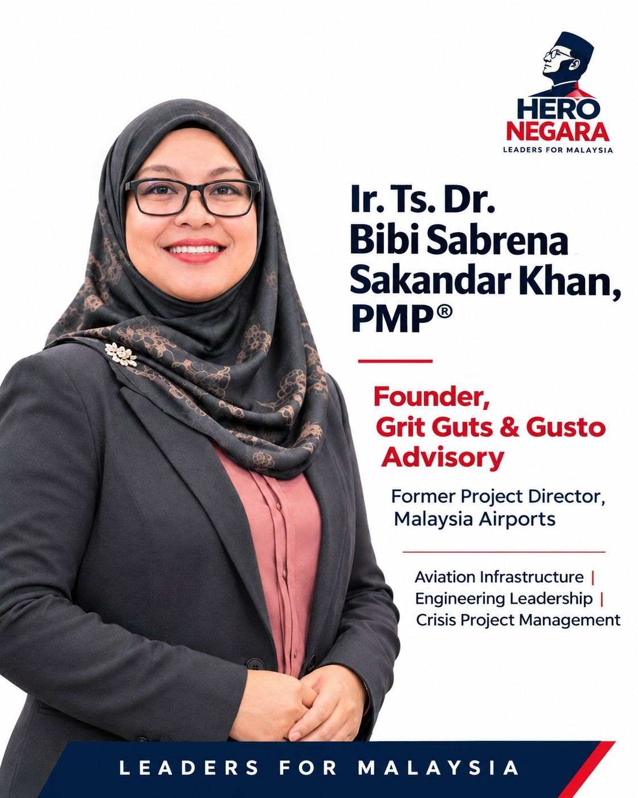

Featured by Hero Negara: what a write-up can't show
5 November 2026 · Ir. Ts. Dr. Bibi Sabrena Sakandar Khan
Thank you Hero Negara for this feature in its Leaders for Malaysia series on LinkedIn.
It wasn't easy, but I felt every drop of tears, sweat and blood poured into this needed to be mentioned, despite all the hatred, backlash and bad publicity.
I lived through it and trust me, sometimes it gets me really sad. Yet, with that amanah and integrity intact, I went through it. Insya Allah.
The part a feature can't show
What a write-up can't show is the team. It was a full effort from everybody. It was engineers, contractors, operations staff, and a lot of late nights inside an airport that never closed for a single day.
Why I started Grit Guts & Gusto Advisory
That's why I started Grit Guts & Gusto Advisory. I learned most of it the hard way over 20 years. I'd rather the next generation, especially young women in engineering, learn some of it the easier way.
An invitation
So here's my invitation. On Saturday 21 November, I'm hosting a small santai session beside the retired Aerotrain cars at KLIA. Nasi lemak & teh tarik by the Ol' Aerotrain, and the honest version of what it took.
15 seats only. Early bird until 14 November.
More about the session, or register here.
Grit, Guts and Gusto: when a team brings resilience, courage and passion together, there's no challenge too great and no goal out of reach.
First shared on LinkedIn, 5 November 2026, as a repost of Hero Negara's feature.